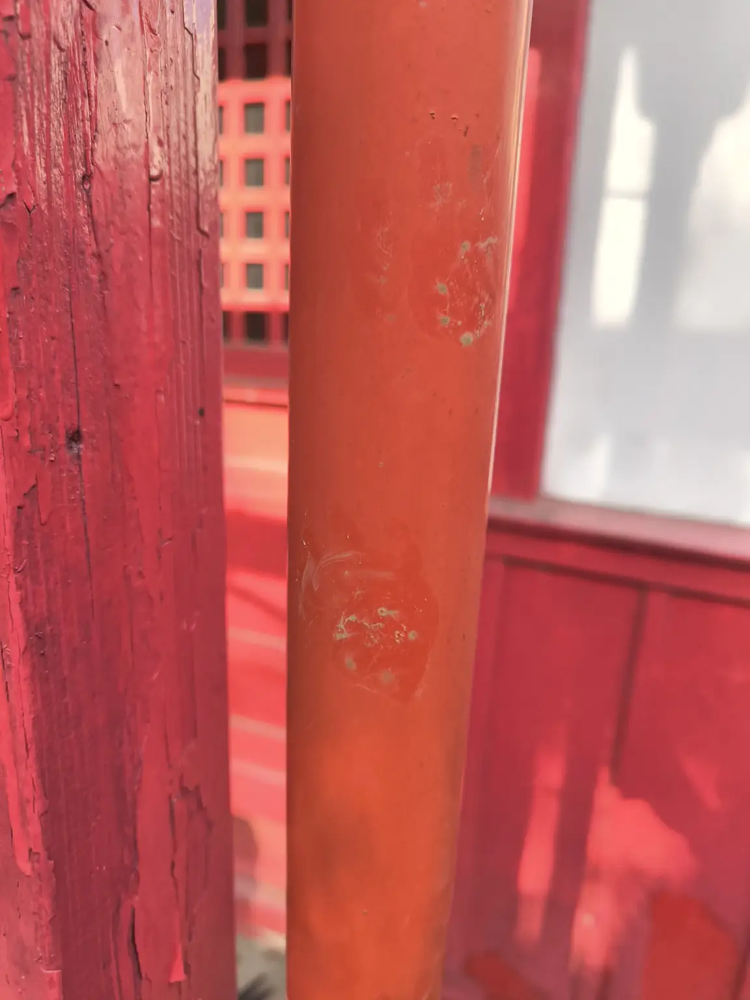

鳥居の補修と塗装
鳥居の補修工事の実写真です。塗装後、出来栄えを確認するために現場を訪れました。施工年月、使用材料、施工面積など未確認の数値は掲載していません。


CONSTRUCTION RECORD / REPAIR
鳥居の補修に携わり、塗装後の仕上がりを確認した現場の記録です。既存の施工写真と、現場で見つかった小さな跡の写真をご紹介します。
鳥居の補修工事の実写真です。塗装後、出来栄えを確認するために現場を訪れました。施工年月、使用材料、施工面積など未確認の数値は掲載していません。

A MOMENT ON SITE
塗装が終わり、仕上がりを見に行ったところ、赤い柱に動物の足跡にも見える小さな跡が残っていました。「お稲荷さんのお使いが見に来たのかもしれない」——そんな話も出た、現場のひとこまです。
※写真の跡が動物によるものか、どの動物のものかは確認できていません。工事の性能・品質を示すものではなく、現場でのエピソードとして掲載しています。
補修する箇所や現況写真など、分かる範囲でご相談ください。施工内容と必要な許可区分を確認し、対応可否を検討します。
補修・改修工事を相談する →